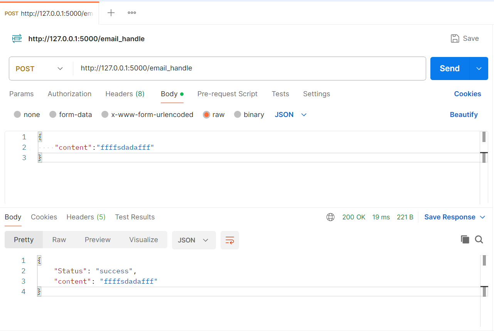

Flask 服务交付
我们在进行模型部署时，首先用户传递给我们数据，大部分情况是json格式的，例如:
{
"content":"邮件内容"
}
然后由我们的部署的模型接收数据，并预测，最后返回一个json格式的输出。在这里，我们需要学习:
- json格式数据接收
- json格式数据返回
我们首先需要接收到json格式的数据，然后进行处理，当我们接收到数据之后，我们就给用户返回对应的json格式的输出。
在 .html 文件内，修改 form 表单的 action 属性如下:
<form action="/email_handle" method="post">
<textarea name="content" cols="40", rows="10"></textarea> <br />
<input type="submit" value="提交邮件" />
</form>
在 app.py 中增加额外的业务处理函数 email_handle, 专门用来接收表单发来的邮件数据。
from flask import Flask, Response, json
from flask import request
# 初始化 Flask 应用
app = Flask(__name__)
@app.route('/email_submit', methods=['GET'])
def email_submit():
with open('email_submit.html', 'rb') as file:
content = file.read()
return content
@app.route('/email_handle', methods=['POST'])
def email_handle():
# 获取json格式的输入
request_json = request.get_json()
email_data = request_json['content']
# 定义响应数据格式
respose_data = {
'Status': 'success',
"content": email_data,
}
# 返回请求数据
return Response(status=200, response=json.dumps(respose_data, sort_keys=False))
if __name__ == '__main__':
app.run()
重新运行程序，使用Postman向 http://127.0.0.1:5000/email_handle发送请求，并在返回响应结果，
请求体：
{
"content":"邮件内容"
}
响应体：
{
"Status": "success",
"content": "邮件内容"
}
如下图所示:
